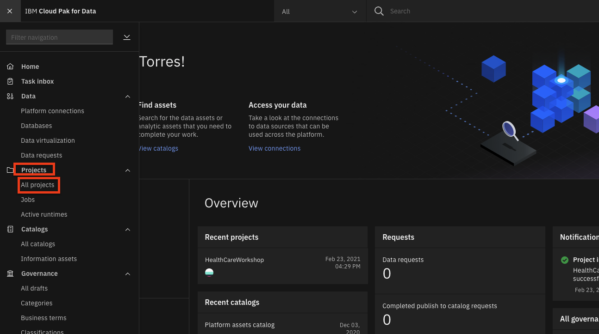
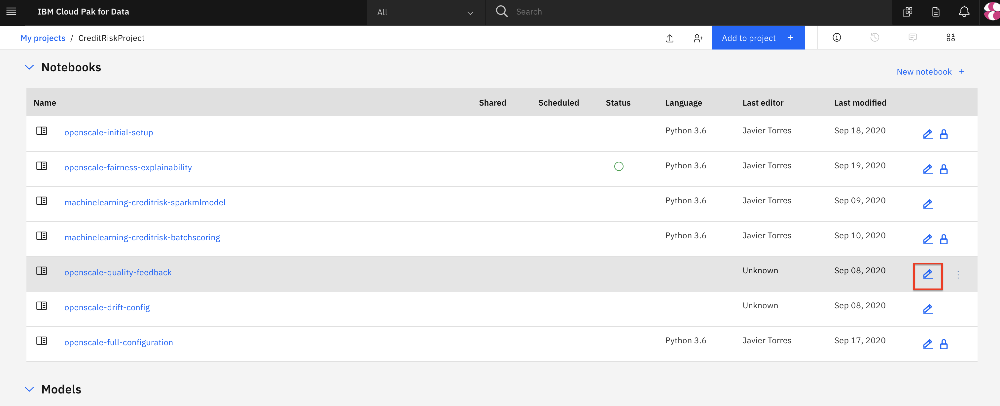
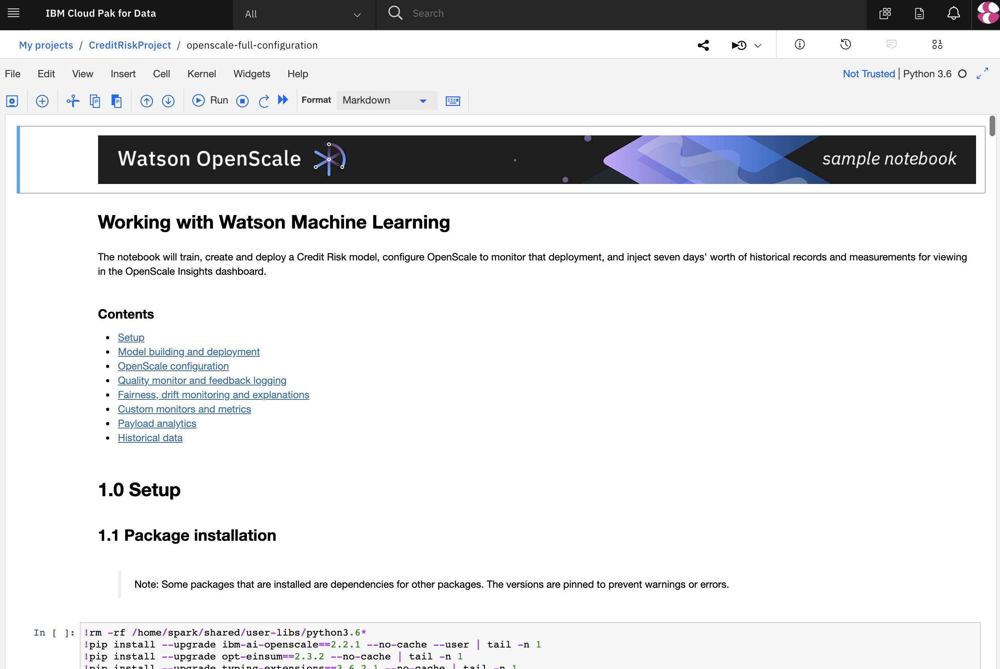
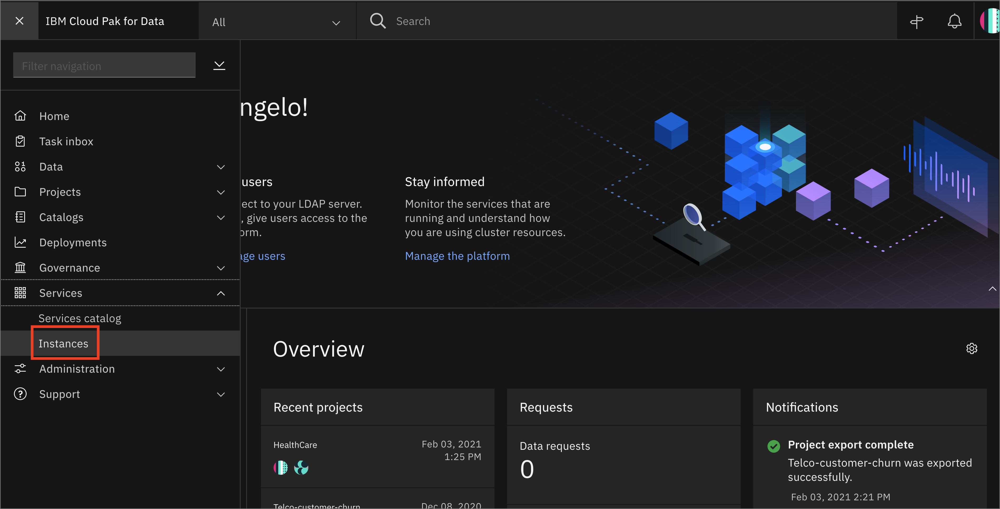
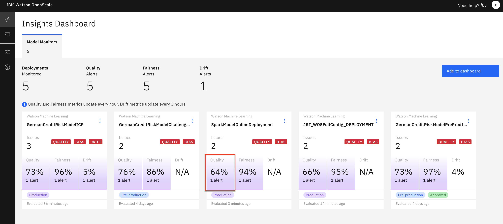
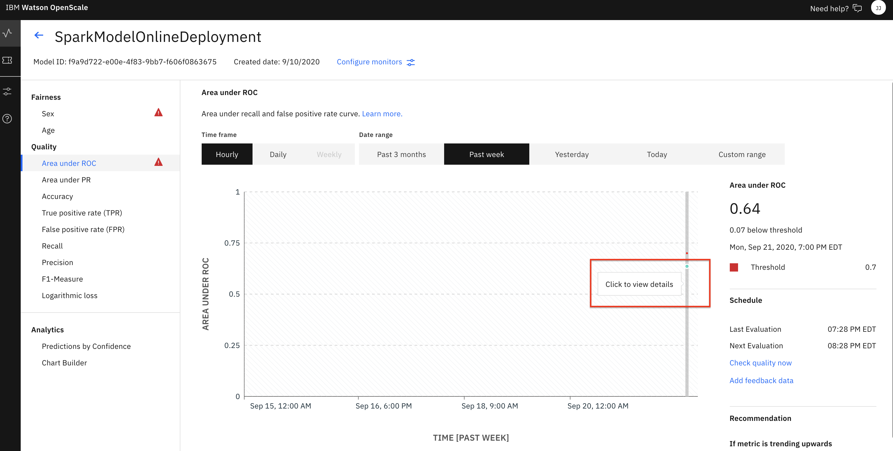
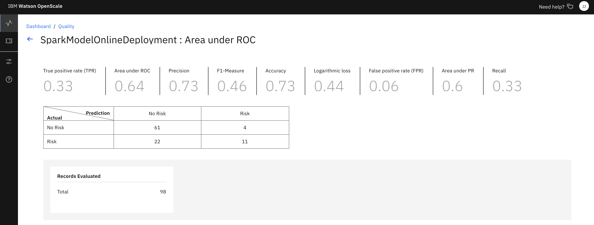
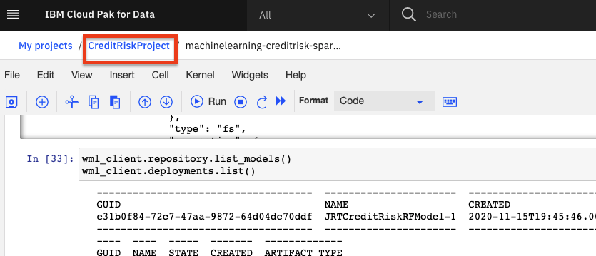
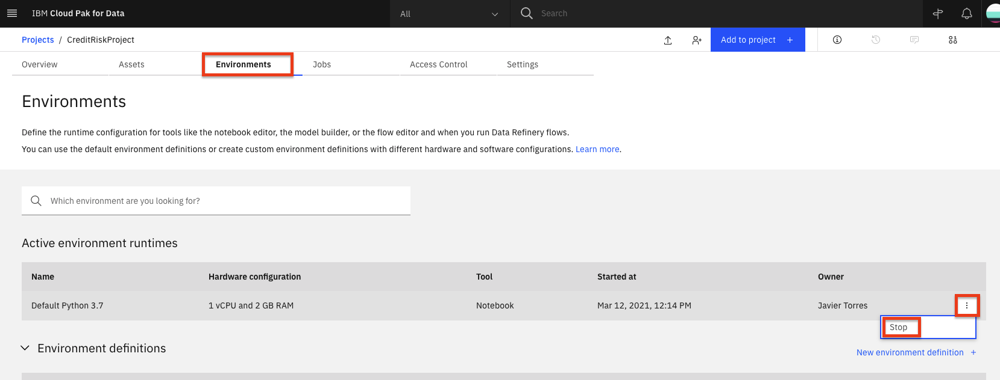

WARNING: This Module is Unsupported and has been Deprecated.¶
Configure Quality monitoring and Feedback logging¶
Watson OpenScale utilizes several monitors to gather data about machine learning inferences and the GUI tool can then present that data in a form that is useful. In this sub-module we will use a Jupyter notebook to configure the monitor for Quality and enable Feedback logging.
Note: It is assumed that you have followed the instructions in the pre-work section to create a project based on an existing project file. If you did not use the project import or do not see the Jupyter notebooks mentioned in this module, see the
Workshop Resources->FAQs / Tipssection for instructions to import the necessary notebooks. Also note that the Jupyter notebooks included in the project have been cleared of output. If you would like to see the notebook that has already been completed with output, see theWorkshop Resources->FAQs / Tipssection for links to the completed notebooks.
Steps for OpenScale Quality monitor and Feedback logging¶
The submodule contains the following steps:
1. Open the Notebook¶
- Go the (☰) navigation menu and click on the Projects link and then click on your analytics project.

-
From your Project overview page, click on the
Assetstab to open the assets page where your project assets are stored and organized. -
Scroll down to the
Notebookssection of the page and Click on the pencil icon at the right of theopenscale-quality-feedbacknotebook.

- When the Jupyter notebook is loaded and the kernel is ready, we will be ready to start executing it in the next section.

2. Run the Notebook¶
Spend some time looking through the sections of the notebook to get an overview. A notebook is composed of text (markdown or heading) cells and code cells. The markdown cells provide comments on what the code is designed to do.
You will run cells individually by highlighting each cell, then either click the Run button at the top of the notebook or hitting the keyboard short cut to run the cell (Shift + Enter but can vary based on platform). While the cell is running, an asterisk ([*]) will show up to the left of the cell. When that cell has finished executing a sequential number will show up (i.e. [17]).
Please note that there are several places in the notebook where you need to update variables. Some of the comments in the notebook are directions for you to modify specific sections of the code. Perform any changes as indicated before running / executing the cell. These changes are described below.
WOS_CREDENTIALS¶
-
In the notebook section 2.0 you will add your Cloud Pak for Data platform credentials for the WOS_CREDENTIALS.
-
For the
url, use the URL your Cloud Pak for Data cluster, i.e something like:"url": "https://zen.clusterid.us-south.containers.appdomain.cloud" - For the
username, use your Cloud Pak for Data login username. - For the
password, user your Cloud Pak for Data login password.
3. Begin to Explore the Watson OpenScale UI¶
-
We've enabled the monitor for Quality and Feedback logging, now let's explore the results in the OpenScale GUI.
-
In the same browser \(but a separate tab\), open the
Servicestab by clicking theServicesicon on the top right.

- Find and click on the
Watson OpenScaletile.

- Launch the OpenScale UI tooling by clicking on the
Launchbutton

- When the dashboard loads, Click on the 'Model Monitors' tab and you will see the deployment you configured in the jupyter notebook when you ran it in the previous section. Click on the
Qualitysection of the tile to bring up the Fairness monitor.

Note: Do not worry if the name you see does not match exactly with the screenshot. The deployment name you see will correspond to the variable used in the Jupyter notebook.
Quality Monitor¶
-
In our dashboard we can see that we have a choice for a variety of graphs under Quality. If we choose Area under ROC, where there is a threshold violation in my example, we'll see a limited chart due to the lack of scoring data. (More data will be added later to make this more interesting).
-
Look for a time slot that shows a quality alert (i.e. below the red threshold line). The monitor only runs once per hour, so there may only be one teal colored "dot" representing a single run when you first visit the graph. Click on it for more details.

- We can see statistics for this time slot including Area under ROC, TPR, FPR, Recall, Precision, and more:

- Other time slots can be examined to gather the relevant quality statistics.
Stop the Environment¶
Important: When you have completed the last submodule in this "openscale-manual-config" section that you will be doing, it's recommended you stop the environment in order to conserve resources. You should only follow these steps to stop your environment if you are not going to proceed with the other sub-modules in this section.
- Navigate back to your project information page by clicking on your project name from the navigation drill down on the top left of the page.

- Click on the 'Environments' tab near the top of the page. Then in the 'Active environment runtimes' section, you will see the environment used by your notebook (i.e the
Toolvalue isNotebook). Click on the three vertical dots at the right of that row and select theStopoption from the menu.

- Click the
Stopbutton on the subsequent pop up window.
Conclusion¶
In this sub-module we've setup Payload logging and the Quality monitor.
Proceed to the next sub-module to configure the Drift monitor